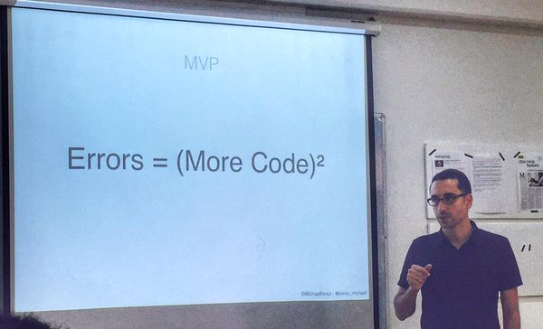

Оно работает!
Полдела сделано :)
Дано: сервер, который умеет API из одного вызова.
На входе одна фраза (вопрос), на выходе другая (ответ).
Действующий макет:
Что надо: сделать из этого ↑ убожества няшный прототип чатика на двоих (вопрос-ответ, вопрос-ответ).
В качестве образца того, как выглядит и как работает чатик, можно взять любой мессенджер, любую соцсеть, любой продающий чат-консультант (вы на нашем сайте уже 3 секунды. Чем могу помочь?). Короче, собственный опыт и здравый смысл.
Можно использовать (на выбор и по вкусу):
Нельзя использовать Angular (оба) и CoffeeScript.
Про остальное лучше посоветоваться.
...и чем проще, тем лучше:
